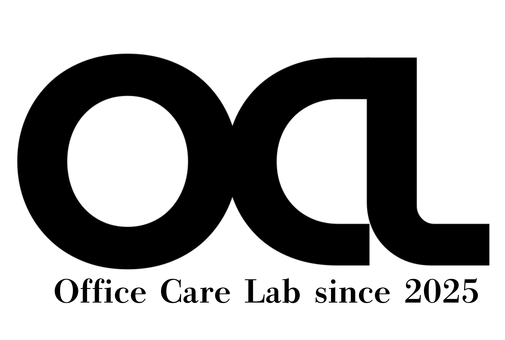
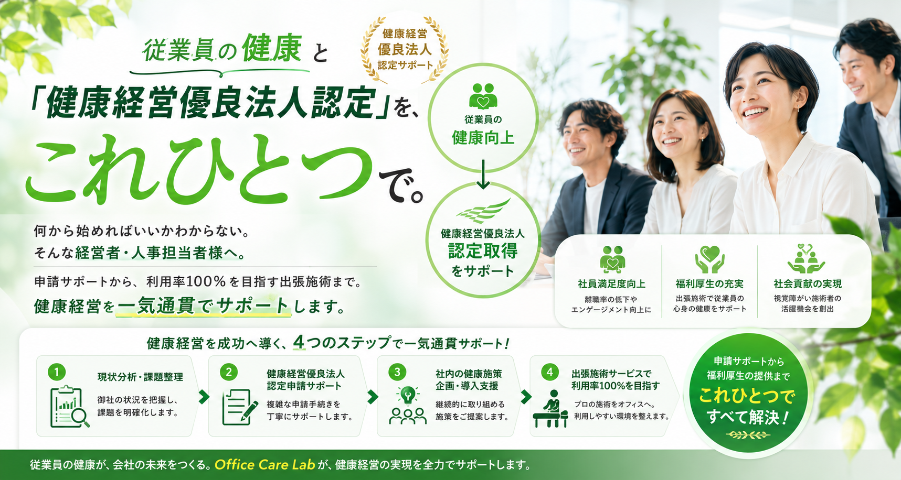
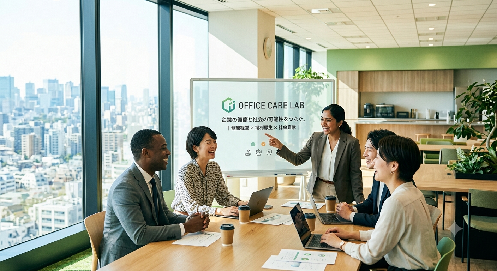
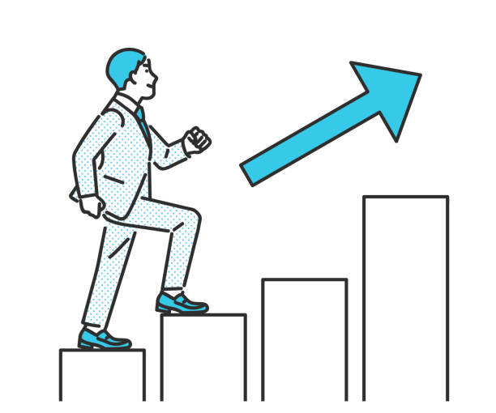
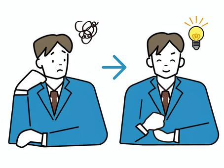

貴社の労働環境や従業員様の健康状態（肩こり・腰痛の割合、メンタル不調の有無など）を徹底的にヒアリングし、潜在的な課題を明確化。健康経営優良法人認定に向けた最適なロードマップを策定します。
複雑な書類作成やデータ提出などの申請手続きを、Office Care Labが全面的に代行・バックアップ。経営者様や人事総務担当者様の社内負担・事務作業をゼロに抑え、確実な認定取得へと導きます。
社内配布用のオリジナル健康コラムPOPの提供や、ストレスチェック、シニア向けの労災防止マニュアル配布など、従業員様のヘルスリテラシーを高める具体的な施策をスムーズに社内へ定着させます。
国家資格を持つプロの施術師が大阪のオフィスへ直接お伺いし、社内の会議室を臨時のリフレッシュ空間へ。個別ストレッチ指導やメンタル傾聴を行い、従業員満足度向上と生産性低下の解消を同時に実現します。
導入するだけで、以下の評価基準・適合項目を一挙にクリア。社内負担ゼロで確実な認定へ導きます。
従業員の定期健康診断の受診徹底を促すアナウンス支援や環境づくりをサポートします。
健診結果で再検査・精密検査が必要となった従業員への受診推奨体制を構築します。
法定義務に基づくメンタルヘルス不調の未然防止に向け、ストレスチェックの実施を形骸化させず支援します。
ラインケアやメンタル不調者の早期発見に向けた、管理職向けの知識共有POPマニュアルを提供します。
ヘルスリテラシー向上を目指し、肩こり腰痛予防やセルフケアに関する専門知識を社内に定着させます。
出張施術を通じたリフレッシュ時間の創出により、長時間労働の抑制や業務効率化の意識を醸成します。
社内の健康増進を目的とした禁煙啓発や受動喫煙防止、各種依存症リスクに関する情報発信を行います。
専門家監修の「栄養バランス」「オフィスでの食事選び」に関する健康コラムPOPを定期配信します。
プロの施術師による個別のストレッチ指導やデスクワーク向けの運動導入により、運動不足を解消します。
女性特有の健康課題（更年期症状、月経に伴う不調など）に対する理解促進とケアをサポートします。
シニア層の身体機能維持、転倒防止、労働災害（労災）を未然に防ぐための具体的な対策を提供します。
オフィス内での集団感染リスクを抑えるため、季節性ウイルスや感染症予防に関する情報・対策を共有します。
※タップすると判定ページへ移動します。
自動で集計されるためお気軽にどうぞ！

企業が抱える「人」の課題と、国家資格を持つ施術者の「就労」の課題。私たちはこれを仕組みで解決します。
企業には「人材不足」「離職率の増加」「社員満足度向上」「健康経営への対応」といった深刻な課題があります。一方で、確かな技術を持ちながらも、十分な活躍の機会を得られていない施術者の現状があります。
Office Care Labは、この２つの課題を結びつけることで、単なる福利厚生にとどまらない、社会課題の解決にも貢献できる持続可能な仕組みづくりを目指しています。
深刻な肩こりや腰痛、PC作業による疲れが原因で、日中の集中力低下や業務効率のダウン（プレゼンティイズム）が目立っている。
一応制度はあるものの、特定の社員しか使っていなかったり、実際に喜ばれている実感が薄く、新しい「全員が喜ぶ仕組み」を探している。
企業の信頼度や採用力を上げるために認定を目指したいが、具体的な計画や、評価基準をクリアするための施策が分からず進まない。
職場のエンゲージメント（愛着心）を高め、従業員の定着率を向上させたいが、他部署との交流や社内ケアのきっかけが掴めない。
▼ そのお悩み、Office Care Lab がまとめて解決します！
貴社の課題を解決し、従業員のパフォーマンスと企業のブランド価値を中長期的に高めます。
専門的なケアを通じて従業員の健康課題に直接アプローチ。プレゼンティーイズム（心身の不調による生産性低下）の解消、生産性向上へダイレクトに貢献します。
認定に必要なエビデンス（実施報告書）作成、申請書の記載アドバイス、施策の提案まで。「任せられる」からこそ、貴社の手間を最小限に認定へと導きます。
「健康経営優良法人」のロゴマークは、求職者にとって大きな魅力。先進的で従業員想いの企業として、優秀な人材に選ばれる企業になります。
オフィス内での定期的なケアにより、肩こりや腰痛、ストレスによるパフォーマンス低下を防止。従業員満足度を高め、離職防止に大きく寄与します。
なぜ、Office Care Labのオフィスケアは「国家資格保持者」にこだわるのか。
実は、日本のヘルスケアを支えるあん摩マッサージ指圧師の国家資格者の多くが、優れた技術を持つ「視覚障がい者」の方々です。Office Care Labでは、彼らプロの施術者と企業様をマッチングする仕組みを整えています。これにより、貴社には福利厚生を超えた「2つの大きな経営的メリット」が生まれます。
企業が自社で視覚障がい者を直接雇用してマッサージルームを作る（ヘルスキーパー制度）には、毎月の固定給のほか、社内のバリアフリー化、専用ベッドの購入、専門の管理職配置など、非常に高いハードルがあります。当サービスを使えば、固定費や環境整備のリスクを一切負うことなく、業務委託という手軽さで、ヘルスキーパー導入と同等の確実なマッサージ環境を手に入れられます。
クライアント企業様は、本サービスを利用するだけで、「間接的に視覚障がい者の職域拡大と経済的自立を支援している」という社会貢献（DE&Iの推進）の実績を作ることができます。一時的な寄付とは異なり、事業を通じた持続可能な社会貢献（CSV）の形として、企業の統合報告書や、健康経営の「方針・理念」において非常に美しいストーリーとしてアピールが可能です。
認定の取得は、単なる「社員想いの証明」にとどまらず、企業の競争力を高める強力な武器となります。
就職活動中の学生や転職希望者、さらにはその家族に対して「従業員の健康を大切にしている優良企業」として大きな安心感を与えます。採用市場での競合他社との差別化に直結します。
心身の不調による欠勤（アブセンティイズム）や、出勤していてもパフォーマンスが低下する状態（プレゼンティイズム）を防ぎます。職場環境が向上することで社員の定着率も高まります。
経済産業省が推進する設計に基づいた認定ロゴマークを、名刺、ホームページ、会社案内、求人票などに掲載可能。取引先や株主、地域社会からの信頼が飛躍的に高まります。
多くの地方自治体や金融機関（政府系・地方銀行など）が、健康経営優良法人の認定企業に対して、融資金利の引き下げや保証料の減免、公共調達での加点評価といった優遇措置を設けています。
お問い合わせから実際のサービス開始まで、スムーズに伴走いたします。
フォームよりお気軽にご連絡ください。まずは現在の課題感や福利厚生に関するご希望をお伺いします。
企業の規模、訪問頻度、ご予算、健康経営優良法人の取得目標などに合わせて、最適な個別プランとお見積もりをご提示します。
社員様向けの案内チラシの作成や、予約管理のご案内など、社内でスムーズに利用してもらうための準備をサポートします。
国家資格を持つプロの施術者がオフィスにお伺いし、いよいよ施術・健康経営サポートがスタートします。

社員が健康でいきいきと働ける職場が日本中に増えること。
企業が健康経営を通じて持続的に成長すること。
専門性の高い国家資格施術者が当たり前に活躍できる社会をつくること。
私たちは、企業・働く人・地域社会の
すべての未来に貢献してまいります。
導入を検討される企業様からいただく、代表的なご質問をまとめました。
会議室や休憩スペースなど、ベッド1台が設置できる広さ（約2畳〜）があれば、どこでも実施可能です。必要な備品やベッドはすべてこちらで持ち込みます。
全員が解剖学や生理学など体の専門知識を学び、厚生労働省が認める「国家資格」を保持したプロフェッショナルです。企業向け施術の専門研修を積んだ施術者がお伺いしますので、安心してお任せください。
はい。全従業員を対象とするなどの一定の条件を満たすことで、法定福利費や福利厚生費として適正に経費計上することが可能です。

貴社の規模やご予算に合わせて、最適なプランをオーダーメイドでご提案いたします。
※ご相談・お見積もりはすべて無料です。